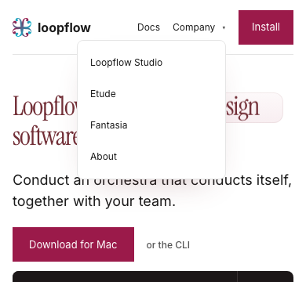

Head af1c52f5f2. Written headless; nobody has answered the questions below yet.
One file says what Loopflow looks like: DESIGN.md. VISUAL_DESIGN.md and swift/DESIGN.md are gone, and so are the site's /design, /colors and /fonts pages (1,260 lines of Cormorant/Lato comparisons that contradicted it).
## The language Three voices. Serif is what a person named or asked for, sans is the interface, mono is the machine. | Serif | Old Standard TT 400 | 24 pt and up only … | Sans | Atkinson Hyperlegible Next 400/600 | Everything read or pressed | Mono | Spline Sans Mono 400/700 | Commands, paths, IDs, SHAs, … the terminal
In Loopflow for Mac, the terminal looks different: ligatures off, thicker strokes, 10% taller cells. A person's own Ghostty config still wins.
static let loopflowConfig = """ font-size = 13 font-feature = -calt font-feature = -liga font-thicken = true adjust-cell-height = 10% minimum-contrast = 3 """
The website's stylesheet uses named steps (--t-*, --space-*, --radius-*), with dead selectors removed. The pages look the same, apart from two fixes: the open Company menu no longer turns Pico blue, and the Install button's focus ring is dark on wine.

Reference pages for the Mac app and website live in design/prototypes/ (desktop.html, elements.html, homepage-next/, …).
open DESIGN.md open design/prototypes/desktop.html design/prototypes/elements.html cd website && PORT=5077 uv run python main.py # then /, /download, /docs/work; /design is 404
To see the terminal defaults you need a Loopflow for Mac build from this branch. Open any Task's terminal and type -> != =>: each one should show as separate characters.
DESIGN.md rules out. git revert brings them back.DESIGN.md has two sections, The language (the target) and Tokens today (what ships now). The site still uses its old faces, and the terminal is still JetBrains Mono. The font change waits in design/prototypes/website-fonts.patch for the stacked website Task.--t-* steps, and four of them (name, head, intro, small) are new on this branch. That breaks rule 4. The rename changes sizes on the page, so it went to the stacked Task.swift/README.md. It describes behavior, not looks.+validate-config accepts the keys (and rejects a misspelled one), but nobody has looked at a rendered terminal.| Finding | Proposal |
|---|---|
Apply and delete website-fonts.patch; rename the web --t-* steps to the eight language names | Already planned for stacked Task dd8997 (website in the new faces). No new Task. |
Focused buttons on /download show a thin light-blue ring inside the burgundy outline (main does too) | Added to dd8997's brief with lf steer. It is the same kind of fix to the same stylesheet. |
| Deleted and unknown routes show Starlette's bare "404 Not Found" text, not a site page (main does too) | Added to dd8997 the same way. Too small to be a Task of its own. |
| Shape by kind: the language names control/row/pane/floating (4/8/12/16); Swift and the web name sizes, and the web has no 16 | Belongs with the stacked Tasks dd8997 and 3d4350, which move both codebases onto the language. No new Task. |
The suites on CI's head run were skipped (the head commit only touches scratch), so the Swift build of GhosttyManager.swift and the website suite have not run on CI for this head | Gate's job: it publishes and has to see macos and website-test actually run. The website suite passed locally (73). |
No new Task was filed. Everything left over either fits a Task that already exists or is gate's work.
font-thicken (c) drop the 10% cell height (d) revert all of them/design, /colors and /fonts: (a) fine (b) bring back a /design generated from DESIGN.mdConcept-review questions 1–4 (scratch/concept-review.html) are also unanswered. Its own choices were 1a, 2a, 3a, 4a.